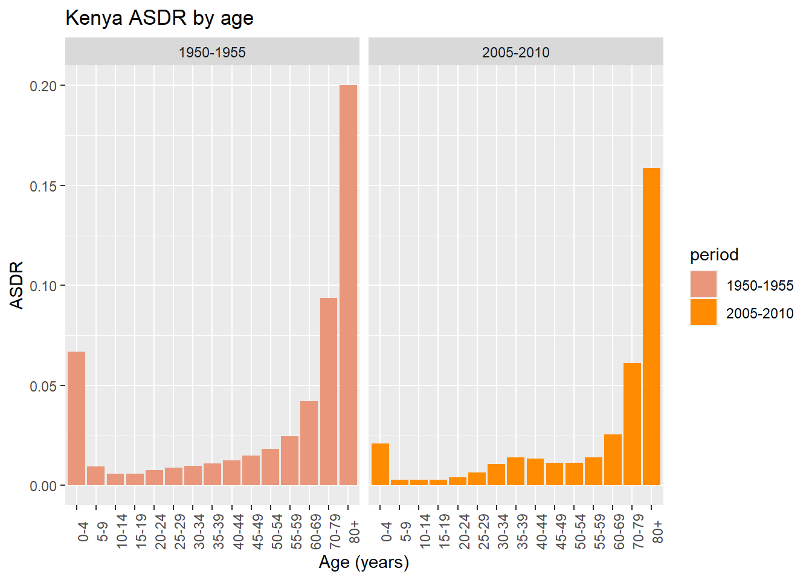

## Path Variables ----
# declares project folder as root_path
root_path <- rprojroot::find_root(has_dir("src"))
# declare desired subdirectories based on root_path
code_path <- file.path(root_path, "src")
docs_path <- file.path(root_path, "doc")
raw_data_path <- file.path(root_path, "data", "raw_data")
figs_path <- file.path(root_path, "results", "figures")
tables_path <- file.path(root_path, "results", "tables")Understanding World Population Dynamics
Assignment 1 - PSYC593
Understanding population dynamics is important for many areas of social science. We will calculate some basic demographic quantities of births and deaths for the world’s population from two time periods: 1950 to 1955 and 2005 to 2010. We will analyze the following CSV data files - Kenya.csv, Sweden.csv, and World.csv. Each file contains population data for Kenya, Sweden, and the world, respectively. The table below presents the names and descriptions of the variables in each data set.
| Name | Description |
|---|---|
country |
Abbreviated country name |
period |
Period during which data are collected |
age |
Age group |
births |
Number of births in thousands (i.e., number of children born to women of the age group) |
deaths |
Number of deaths in thousands |
py.men |
Person-years for men in thousands |
py.women |
Person-years for women in thousands |
Source: United Nations, Department of Economic and Social Affairs, Population Division (2013). World Population Prospects: The 2012 Revision, DVD Edition.
Before reading the data, I declare global path variables to help navigate the directory better. As seen below, the “root path” (root_path) will be declared to the the folder containing the R project file. All subfolders within the project folder will then be declared as a path from root_path.
# Read data ----
world_data <- readr::read_csv(file = file.path(raw_data_path, "World.csv"))
kenya_data <- readr::read_csv(file = file.path(raw_data_path, "Kenya.csv"))
sweden_data <- readr::read_csv(file = file.path(raw_data_path, "Sweden.csv"))The data are collected for a period of 5 years where person-year is a measure of the time contribution of each person during the period. For example, a person that lives through the entire 5 year period contributes 5 person-years whereas someone who only lives through the first half of the period contributes 2.5 person-years. Before you begin this exercise, it would be a good idea to directly inspect each data set. In R, this can be done with the View function, which takes as its argument the name of a data.frame to be examined. Alternatively, in RStudio, double-clicking a data.frame in the Environment tab will enable you to view the data in a spreadsheet-like view.
Question 1
We begin by computing crude birth rate (CBR) for a given period. The CBR is defined as: \[ \text{CBR} = \frac{\text{number of births}}{\text{number of person-years lived}} \]
Compute the CBR for each period, separately for Kenya, Sweden, and the world. Start by computing the total person-years, recorded as a new variable within each existing data.frame via the $ operator, by summing the person-years for men and women. Then, store the results as a vector of length 2 (CBRs for two periods) for each region with appropriate labels. You may wish to create your own function for the purpose of efficient programming. Briefly describe patterns you observe in the resulting CBRs.
Answer 1
NOTE: for effectively all of the questions/answers, the question description provides an indication of what the following code seeks to achieve.
1) The first block of code will define some sort of function based on the question/equation which takes the data as an input and modifies the DataFrame or returns a summary as an output.
2) The second (or, in this case, third) block of code will apply that function to our 3 data sets in order to produce an answer to the original question asked. For instance, the third block of code for this question computers CBR summaries for each of the 3 data sets. Then, I discuss the patterns associated with the answers immediately below them.
Because each question follows this same pattern, and because over-commenting code is not recommended by Tidyverse, all following blocks will include a one-line comment with their purpose inside the block, rather than outside. For function blocks, I try to include this description within the function rather than outside of it.
When questions contain special blocks (i.e. more than the 2 listed above), I will provide an extra description of that block’s purpose.
create_py <- function(dataset) {
# For any chosen dataset, combines the men and women per-year amounts into a total, per-year variable.
# We need this total to compute the Crude Birth Rate of any country
dataset$py.men + dataset$py.women
}
# Create new variable py = total person years for each data set
# This uses the create_py function just defined, and also adjusts code to align with tidyverse style
world_data$py <- create_py(world_data)
kenya_data$py <- create_py(kenya_data)
sweden_data$py <- create_py(sweden_data)Below is a second function block. The first block defines a function to compute total per-year subjects, and this block defines the actual CBR function based on the equation above (which uses total per-year counts).
# Function to compute the Crude Birth Rate (CBR)
# The "pipe" `%>%` from package `magrittr` takes the output from the left hand side and makes it the first argument of the expression on the right hand side,
compute_cbr <- function(pop_data) {
pop_data %>%
group_by(period) %>%
summarise(cbr = sum(births) / sum(py)) %>% # Summary based on equation given above
pull()
}# Compute the CBR for each data set
# NOTE: putting () around each of the variables seems to cause their output to display. Keeping it this way for convenience of display.
(world_cbr <- compute_cbr(world_data)) [1] 0.03732863 0.02021593(kenya_cbr <- compute_cbr(kenya_data))[1] 0.05209490 0.03851507(sweden_cbr <- compute_cbr(sweden_data))[1] 0.01539614 0.01192554Discussion 1:
Crude birth rate is weird to me due to its comparison of person-years to number of births. Since we are monitoring a 5-year period of data, person-years should be effectively 5x the number of people featured in the study (e.g. 10 people tracked for 5 years = 50 person-years). It is unclear if number of births is represented by year or over the 5-year period, and the number of births is an absolute value, not a birth-year representation. Nonetheless, we a larger CBR corresponds to a larger overall birthrate; a CBR of 0.05 correlates roughly to an annual birthrate of about 5% of the population, or 50 births per 1000 individuals (since data is measured in 1000s here).
We notice that Sweden, a developed European country, has a very low CBR between 0.10 and 0.15 in both 5-year periods. Kenya, a less-developed African Country has a much higher CBR (0.052/0.038), and the overall world CBR is somewhere in between. Also worth noting is that CBR was higher in the 1950-55 period than in the 2005-10 period across the board: birth rates have decreased overall since the 50s.
Question 2
The CBR is easy to understand but contains both men and women of all ages in the denominator. We next calculate the total fertility rate (TFR). Unlike the CBR, the TFR adjusts for age compositions in the female population. To do this, we need to first calculate the age specific fertility rate (ASFR), which represents the fertility rate for women of the reproductive age range \([15, 50)\). The ASFR for age range \([x, x+\delta)\), where \(x\) is the starting age and \(\delta\) is the width of the age range (measured in years), is defined as: \[ \text{ASFR}_{[x,\ x+\delta)} \ = \ \frac{\text{number of births to women of age $[x,\ x+\delta)$}}{\text{Number of person-years lived by women of age $[x,\ x+\delta)$}} \] Note that square brackets, \([\) and \(]\), include the limit whereas parentheses, \((\) and \()\), exclude it. For example, \([20, 25)\) represents the age range that is greater than or equal to 20 years old and less than 25 years old. In typical demographic data, the age range \(\delta\) is set to 5 years. Compute the ASFR for Sweden and Kenya as well as the entire world for each of the two periods. Store the resulting ASFRs separately for each region. What does the pattern of these ASFRs say about reproduction among women in Sweden and Kenya?
Answer 2
compute_asfr <- function(pop_data) {
# Function to compute Age specific fertility rate (ASFR)
# Note that we do not have to compute a summary, nor the 5-year age ranges, because those are already nicely arranged by the cells in the data.
# We just have to compute an ASFR for each 5-year age row.
pop_data %>%
mutate(asfr = births / py.women)
}# Compute ASFR for each data set
world_data <- compute_asfr(world_data)
kenya_data <- compute_asfr(kenya_data)
sweden_data <- compute_asfr(sweden_data)This 3rd block allows us to numerically compare asfr counts for Kenya and Sweden, but it is a little hard to interpret.
# Compare ASFRs for Kenya and Sweden
# Output suppressed by recommendation. Histograms are used for more effective
# comparison below.
kenya_data$asfr [1] 0.00000000 0.00000000 0.00000000 0.16884585 0.35596942 0.34657814
[7] 0.28946367 0.20644016 0.11193267 0.03905205 0.00000000 0.00000000
[13] 0.00000000 0.00000000 0.00000000 0.00000000 0.00000000 0.00000000
[19] 0.10057087 0.23583536 0.23294721 0.18087964 0.13126805 0.05626214
[25] 0.03815044 0.00000000 0.00000000 0.00000000 0.00000000 0.00000000sweden_data$asfr [1] 0.0000000000 0.0000000000 0.0000000000 0.0389089519 0.1277108826
[6] 0.1252436647 0.0873641591 0.0486037714 0.0162101857 0.0013418290
[11] 0.0000000000 0.0000000000 0.0000000000 0.0000000000 0.0000000000
[16] 0.0000000000 0.0000000000 0.0000000000 0.0059709097 0.0507320271
[21] 0.1162085625 0.1322744621 0.0625923991 0.0121600765 0.0006143942
[26] 0.0000000000 0.0000000000 0.0000000000 0.0000000000 0.0000000000Discussion 2
Printing the columns doesn’t give us a very good indication of how Kenya and Sweden compare, so I’ll make a set of barplots with asfr on the y axis and age on the x axis.
Note that the first barplot analyzes Kenya’s data (split by period), the second plot analyzes Sweden’s data, and the third plot overlays Kenya’s and Sweden’s data for comparison. Before I make this plot, I will have to convert the age data from a string to a factor so that it can be plotted properly.
# Convert Kenya data to factor to avoid plot ordering
# Kenya age is currently a string, so the x-axis sorts it alphabetically. This unfortunately puts all ages 0-40 in order, and then 5-9 comes after 45-49 and below 50-59, etc.
# According to a stackoverflow post, one way to deal with this is to convert columns to factor variables with unique levels for each point to "force" order for strings. Levels can also be assigned or reassigned manually.
kenya_data$age <- factor(kenya_data$age, levels = unique(kenya_data$age))
# We repeat the same process for Sweden data and world data
sweden_data$age <- factor(sweden_data$age, levels = unique(sweden_data$age))
world_data$age <- factor(world_data$age, levels = unique(world_data$age))# Generates a barplot that describes Kenya's ASFR's by age. Split by Period.
# Now switching to ggplot (hopefully for better results; barplot() didn't work well).
# Additionally, ensuring character variables use double quotes " to align with tidyverse.
# Useful link for setting and rotating text labels with ggplot: https://www.datanovia.com/en/blog/ggplot-axis-ticks-set-and-rotate-text-labels/
# Plot overlap suggestion by https://stackoverflow.com/questions/6957549/overlaying-histograms-with-ggplot2-in-r
# Barplot for Kenya data
kenya_plot <- ggplot(
data = kenya_data,
mapping = aes(x = age, y = asfr, fill = period) # Set x and y axes to asfr and age, respectively
# NOTE: fill is required to fill the color into the bar. We sort and color by period, but if we do not fill it in this mapping period, the bars seem to be grey and colorless.
) +
labs( # Assign labels where still needed
title = "Kenya ASFR by age",
x = "Age (years)",
y = "ASFR"
) +
geom_col() + # Create barplot using data specified above
theme(
axis.text.x = element_text(angle = 90, vjust = 1, hjust = 1) # rotate x ticks to be more readable
) +
scale_fill_manual(values = c("darksalmon", "darkorange")) + # add color by period
facet_wrap(~period) # Separate data by period
# Barplot for Sweden data
sweden_plot <- ggplot(
data = sweden_data,
mapping = aes(x = age, y = asfr, fill = period)
) +
labs( # Assign labels where still needed
title = "Sweden ASFR by age",
x = "Age (years)",
y = "ASFR"
) +
geom_col() + # Create barplot using data specified above
theme(
axis.text.x = element_text(angle = 90) # rotate x ticks to be more readable
) +
scale_fill_manual(values = c("steelblue", "darkseagreen")) +
facet_wrap(~period) # Separate data by period
# Overlapping plot
overlap_plot <- ggplot(
data = sweden_data,
mapping = aes(x = age, y = asfr)
) +
labs(
title = "Overlapping ASFR by age",
subtitle = "Sorted by period, overlapping by country",
x = "Age (years)",
y = "ASFR",
color = "Legend",
) +
scale_color_manual(labels = c("Kenya", "Sweden"), values = c("darksalmon", "blue")) + # Alternative way of specifying scale fill and color values
scale_fill_manual(labels = c("Kenya", "Sweden"), values = c("darksalmon", "blue")) +
geom_col(data = sweden_data, mapping = aes(color = "Sweden"), fill = "blue", alpha = 0.2) +
geom_col(data = kenya_data, mapping = aes(color = "Kenya"), fill = "darksalmon", alpha = 0.2) +
guides(color = guide_legend(
override.aes = list(fill = c("darksalmon", "blue"), alpha = 0.1))) + # Overrides aesthetics of the legend so that legend fill doesn't appear dark purple (mix of salmon and blue)
theme(axis.text.x = element_text(angle = 90)) + # rotate x ticks to be more readable
facet_wrap(~period)
kenya_plot sweden_plot overlap_plotAlthough this isn’t the best possible representation of data, it is easy to see the trends for each of the 5-year instances: data on the left corresponds to 1950-55 data; data on the right corresponds to 2005-10 data.
We see that while Kenya’s ASFR tends to be larger (more dense) across the board, the trends for both countries are quite similar for the 1950-55 set: age specific fertility rate begins the 15-19 age range, doubles (or more) and peaks between 20 and 30, and then slowly declines until about age 45-50.
However, for data in 2005-2010, we see that Kenya’s trend spreads out a bit more, with fertility rate increasing for younger individuals and staying relatively high from 20 to 40. On the other hand, Sweden asfr narrows and shifts right. With little variation, peak asfr now centers around the 25-35 range.
Question 3
Using the ASFR, we can define the TFR as the average number of children women give birth to if they live through their entire reproductive age. \[ \text{TFR} = \text{ASFR}_{[15,\ 20)} \times 5 + \text{ASFR}_{[20,\ 25)} \times 5 + \dots + \text{ASFR}_{[45,\ 50)} \times 5 \]
We multiply each age-specific fertility rate rate by 5 because the age range is 5 years. Compute the TFR for Sweden and Kenya as well as the entire world for each of the two periods. As in the previous question, continue to assume that women’s reproductive age range is \([15, 50)\). Store the resulting two TFRs for each country or the world as a vector of length two. In general, how has the number of women changed in the world from 1950 to 2000? What about the total number of births in the world?
Answer 3
# Function to compute the total fertility rate (TFR)
# Note that this computes TFR for each time period,
# rather than the total across both periods.
compute_tfr <- function(pop_data) {
pop_data %>%
group_by(period) %>%
summarise(tfr = 5 * sum(asfr)) %>%
pull()
}# Compute the TFR for each data set
(world_tfr <- compute_tfr(world_data))[1] 5.007248 2.543623(kenya_tfr <- compute_tfr(kenya_data))[1] 7.591410 4.879568(sweden_tfr <- compute_tfr(sweden_data))[1] 2.226917 1.902764The block below uses a pipeline to give us a measure of total births, rather than birth (fertility) rates, by country. This is useful for comparing total births by country, and seeing if it matches up with fertility rate.
# Compute totals of women and births in the world by period
(
world_data %>%
group_by(period) %>%
summarise(total_women = sum(py.women),
total_births = sum(births)) ->
totals_world
)# A tibble: 2 × 3
period total_women total_births
<chr> <dbl> <dbl>
1 1950-1955 6555686. 488892.
2 2005-2010 16554781. 674581.# Compare how much these totals have changed
(changes_totals <- totals_world[2, -1] / totals_world[1, -1]) total_women total_births
1 2.525256 1.379818Discussion 3
From the above 2 cells, we see that the number of women in the world has increased by 150%, from 6.5556855^{6} in 1950/55 to 1.6554781^{7} in 2005/10. However, the total number of births in the world has only increased by 38%, from 4.8889153^{5} to 6.7458127^{5}. Although this is still an increase, it is reflective of the fact that people today live longer but have fewer children. Worldwide, TFR was halved from 5.0 to 2.54.
Question 4
Next, we will examine another important demographic process: death. Compute the crude death rate (CDR), which is a concept analogous to the CBR, for each period and separately for each region. Store the resulting CDRs for each country and the world as a vector of length two. The CDR is defined as: \[ \text{CDR} = \frac{\text{number of deaths}}{\text{number of person-years lived}} \] Briefly describe patterns you observe in the resulting CDRs.
# Function to compute the Crude death rate (CDR).
# Again, this function computes CDR by period, and not total CDR across both periods.
# It utilizes the formula provided above to do so.
compute_cdr <- function(pop_data) {
pop_data %>%
group_by(period) %>%
summarise(cbr = sum(deaths) / sum(py)) %>%
pull()
}Answer 4
# Compute the CDR for each data set
(world_cdr <- compute_cdr(world_data))[1] 0.019318929 0.008166083(kenya_cdr <- compute_cdr(kenya_data))[1] 0.02396254 0.01038914(sweden_cdr <- compute_cdr(sweden_data))[1] 0.009844842 0.009968455Discussion 4
Similar to Crude Birth Rate, we notice 2 overarching trends:
1) In the 1950’s, sweden_cdr < world_cdr < kenya_cdr, with Sweden’s death rate being about half of Kenya’s and the World’s death rate in 1950s. Death Rates nearly equalize in the 2000s
2) All CDR’s are lower in the 2000s than in the 1950s, except for Sweden’s, which stayed roughly the same but increased ever so slightly.
Question 5
One puzzling finding from the previous question is that the CDR for Kenya during the period of 2005-2010 is about the same level as that for Sweden. We would expect people in developed countries like Sweden to have a lower death rate than those in developing countries like Kenya. While it is simple and easy to understand, the CDR does not take into account the age composition of a population. We therefore compute the age specific death rate (ASDR). The ASDR for age range \([x, x+\delta)\) is defined as: \[ \text{ASDR}_{[x,\ x+\delta)} \ = \ \frac{\text{number of deaths for people of age $[x,\ x+\delta)$}} {\text{number of person-years of people of age $[x,\ x+\delta)$}} \] Calculate the ASDR for each age group, separately for Kenya and Sweden, during the period of 2005-2010. Briefly describe the pattern you observe.
NOTE: Although this question only calls for calculation of ASDR in the 2005-10 period, I think that the question can only be properly answered if we compare our results to the initial 50s period, so I am keeping both periods. See the discussion for a proper comparison.
# Function to compute Age specific death rate (ASDR).
# Again, we mutate instead of summarize the data
# because it is already split into nice 5-year age gaps.
compute_asdr <- function(pop_data) {
pop_data %>%
mutate(asdr = deaths / py)
}Answer 5
# Compute ASDR for each data set
world_data <- compute_asdr(world_data)
kenya_data <- compute_asdr(kenya_data)
sweden_data <- compute_asdr(sweden_data)Discussion 5
We will once more plot this data for easier visualization
# Barplot for Kenya
# Note that these plots should be very similar to the previous ones, so I will only comment notable deviations or unexplained issues.
kenya_plot_asdr <- ggplot(
data = kenya_data,
mapping = aes(x = age, y = asdr, fill = period)
) +
labs(
title = "Kenya ASDR by age",
x = "Age (years)",
y = "ASDR"
) +
geom_col() +
theme(
axis.text.x = element_text(angle = 90)
) +
scale_fill_manual(values = c("darksalmon", "darkorange")) +
facet_wrap(~period)
# Barplot for Sweden
sweden_plot_asdr <- ggplot(
data = sweden_data,
mapping = aes(x = age, y = asdr, fill = period)
) +
labs(
title = "Sweden ASDR by age",
x = "Age (years)",
y = "ASDR"
) +
geom_col() +
theme(
axis.text.x = element_text(angle = 90)
) +
scale_fill_manual(values = c("steelblue", "darkseagreen")) +
facet_wrap(~period)
# Barplot for the world
world_plot_asdr <- ggplot(
data = world_data,
mapping = aes(x = age, y = asdr, fill = period)
) +
labs(
title = "World ASDR by age",
x = "Age (years)",
y = "ASDR"
) +
geom_col() +
theme(
axis.text.x = element_text(angle = 90)
) +
scale_fill_manual(values = c("darkgreen", "darkkhaki")) +
facet_wrap(~period)
overlap_plot_asdr <- ggplot(
data = sweden_data,
mapping = aes(x = age, y = asdr)
) +
labs(
title = "Overlapping ASDR by age",
subtitle = "Sorted by period, overlapping by country",
x = "Age (years)",
y = "ASFR",
color = "Legend"
) +
scale_color_manual(values = c("Sweden" = "blue", "Kenya" = "darksalmon", "World" = "darkgreen"),
aesthetics = c("color", "fill")) +
geom_col(data = sweden_data, mapping = aes(color = "Sweden"), fill = "blue", alpha = 0.2) +
geom_col(data = kenya_data, mapping = aes(color = "Kenya"), fill = "darksalmon", alpha = 0.2) +
geom_col(data = world_data, mapping = aes(color = "World"), fill = "darkgreen", alpha = 0.2) +
guides(color = guide_legend(
override.aes = list(fill = c("darksalmon", "blue", "darkgreen"), alpha = 0.1))) +
theme(axis.text.x = element_text(angle = 90)) + # rotate x ticks to be more readable
facet_wrap(~period)
kenya_plot_asdr
sweden_plot_asdrworld_plot_asdr
overlap_plot_asdrThe data shows us 2 spike locations for deaths by age: 75-80+, and 0-4. This means that (understandably) risk of mortality drastically increases as one becomes quite old, and infant mortality is the other main drive behind high death rates.
Notably, Sweden never had a high infant mortality rate; even in the 50s, almost all deaths were from old age. Kenya and the World both had quite high AFDR’s in the 0-4 age-range, resulting in an overall higher mortality rate.
Now, in the 2000s, infant mortality rate is incredibly low even in Kenya and Worldwide. Since nobody is immune to the effects of aging, this has equalized death trends across the board (though the rates are still slightly higher in Kenya, it seems).
Question 6
One way to understand the difference in the CDR between Kenya and Sweden is to compute the counterfactual CDR for Kenya using Sweden’s population distribution (or vice versa). This can be done by applying the following alternative formula for the CDR. \[ \text{CDR} \ = \ \text{ASDR}_{[0, 5)} \times P_{[0,5)} + \text{ASDR}_{[5, 10)} \times P_{[5, 10)} + \cdots \] where \(P_{[x, x+\delta)}\) is the proportion of the population in the age range \([x, x+\delta)\). We compute this as the ratio of person-years in that age range relative to the total person-years across all age ranges. To conduct this counterfactual analysis, we use \(\text{ASDR}_{[x,x+\delta)}\) from Kenya and \(P_{[x,x+\delta)}\) from Sweden during the period of 2005–2010. That is, first calculate the age-specific population proportions for Sweden and then use them to compute the counterfactual CDR for Kenya. How does this counterfactual CDR compare with the original CDR of Kenya? Briefly interpret the result.
# Function to compute population proportion by period
compute_pop_prop <- function(pop_data) {
pop_data %>%
group_by(period) %>%
mutate(pop_prop = py / sum(py)) %>%
ungroup()
}Answer 6
# Compute population proportion for each data set
world_data <- compute_pop_prop(world_data)
kenya_data <- compute_pop_prop(kenya_data)
sweden_data <- compute_pop_prop(sweden_data)# Compute Kenyas CDR if Kenya had Sweden's population distribution.
# This is done by calculating Sweden's population proportion by period,
# and multiplying it by Kenya's ASDR.
cdrre_table <- mutate(kenya_data,
temp_cdr = asdr * sweden_data$pop_prop) %>%
group_by(period) %>%
summarise(cdrre_sweden = sum(temp_cdr))
# Display counterfactual cdr table and
# Get counterfactual cdr of 2005-2010 only, for discussion
(cdrre_table)# A tibble: 2 × 2
period cdrre_sweden
<chr> <dbl>
1 1950-1955 0.0257
2 2005-2010 0.0232cdrre_2005_2010 <- cdrre_table[2,2] %>% pull
# ^ Using a single, in-line pipe of pull above to extract the actual number from the table. Else it just returns as a 1x1 table.Discussion 6
As the comment in the previous cell explains, the counterfactual CDR we compute means we are computing Kenya’s Crude Death Rate if it had Sweden’s population distribution. For reference, the original CDR of Kenya in 2005-2010 was 0.0239625, 0.0103891, vs the new counterfactual cdr is 0.0232165 .
Comparing the two, we find that if Kenya had Sweden’s population, its death count would have been substantially higher in the 2000s (more than double the rate). If we look back at the ASDR plots, we find that the death rate for older individuals is simply higher for Kenya than Sweden in the early 2000s (peaking at around 0.17 for 80+ year-olds in Kenya, vs. about 0.11 for 80+ year-olds in Sweden).
Since the mortality curve is less steep, there seem to be more old people living in Sweden. Put this population in Kenya, where the mortality rates for older folks are higher, and we see an increase in the (counterfactual) CDR.